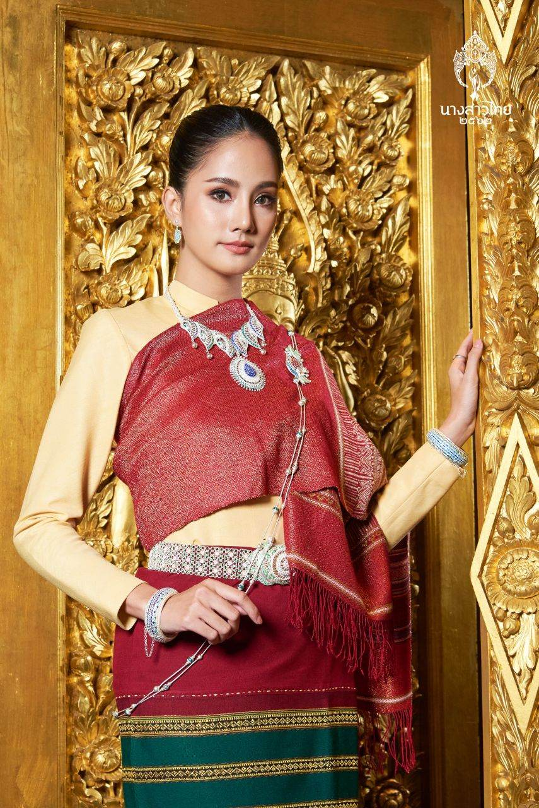
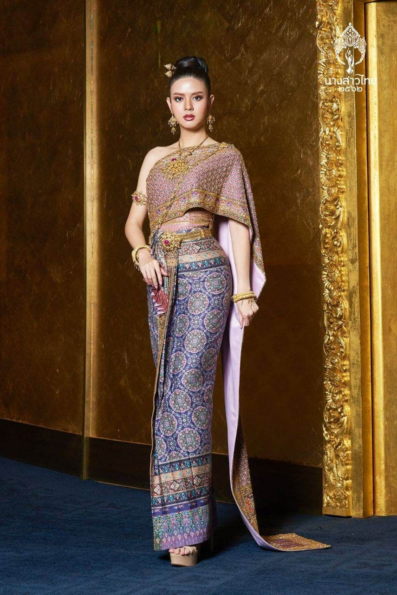
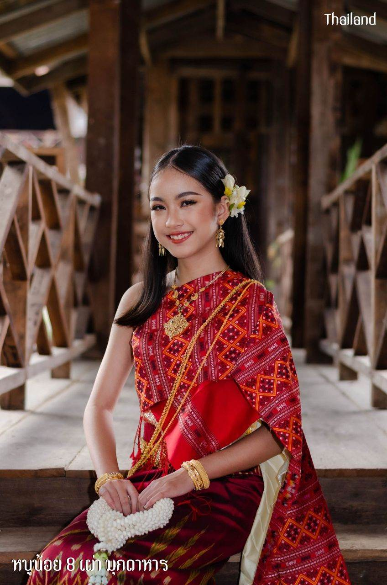
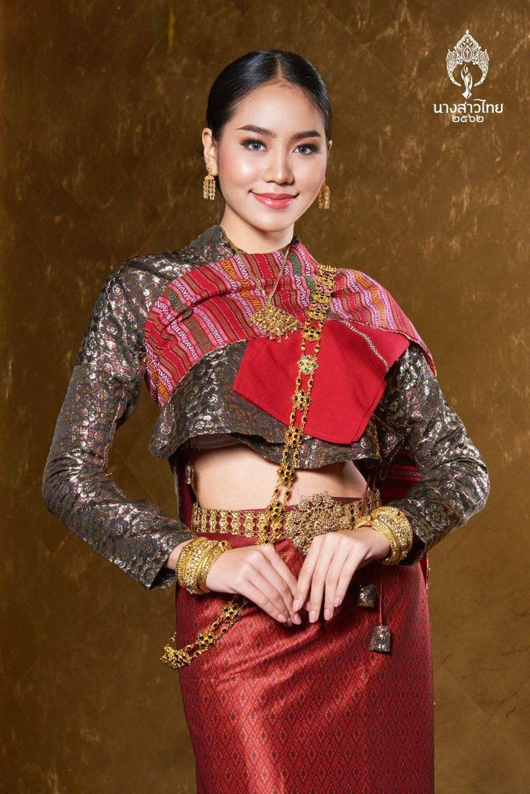

มรดกแห่งภูมิปัญญาไทย
เสน่ห์แห่งการแต่งกายพื้นเมืองไทย
เรียนรู้เรื่องร่าว ผืนผ้าและอัตลักษณ์ชองผู้คนจากทั้ง 4 ภาคชุดทั้ง 4 ภาค
ภาคเหนือ
ภาคกลาง
ภาคอีสาน
ภาคใต้

ชุดผ้าไทยแบบประยุกต์
ชุดผ้าไทยประยุกต์ล้านนาสีแดงทอง โดดเด่นด้วยสไบผ้าไหมทอประกายทอง ผสานผ้าซิ่นลายพื้นเมืองและเครื่องประดับเงินอันวิจิตร สะท้อนความงดงามของศิลปวัฒนธรรมภาคเหนืออย่างสง่างาม
ชุดไหมไทยศรีวิไล
ชุดไทยประยุกต์ผ้าไหมลายไทยโทนม่วงน้ำเงิน พร้อมสไบทอลวดลายประณีตและเครื่องประดับสีทอง ให้ความหรูหรา อ่อนช้อย และเปี่ยมด้วยเสน่ห์แห่งความเป็นไทยร่วมสมัย
ชุดภูไทแดงมุกดาหาร
ชุดพื้นเมืองอีสานประยุกต์ โดดเด่นด้วยผ้าไหมลายขิดโทนสีแดงสดและการห่มสไบแบบดั้งเดิม ผสานเครื่องประดับทองและดอกไม้ไทยอย่างงดงาม สะท้อนเสน่ห์แห่งวัฒนธรรมอีสานที่อ่อนช้อย เรียบหรู และทรงคุณค่าใน